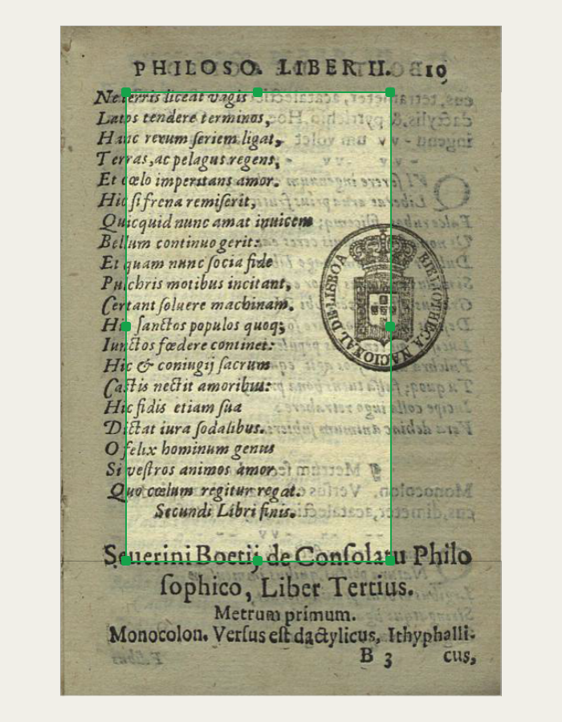
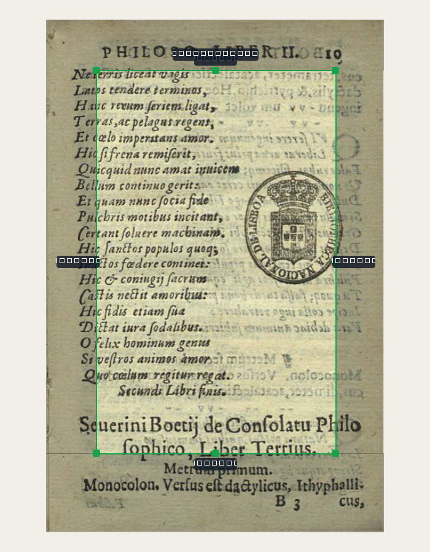
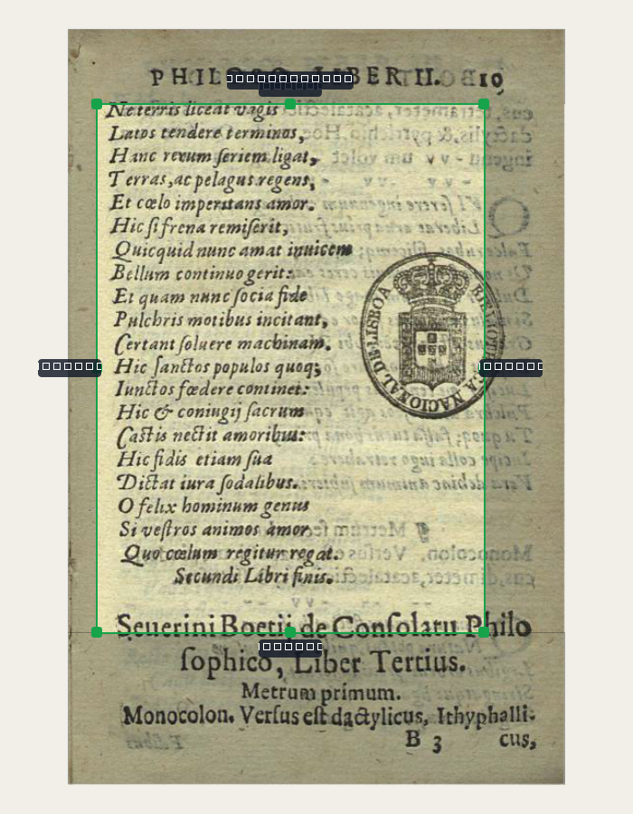
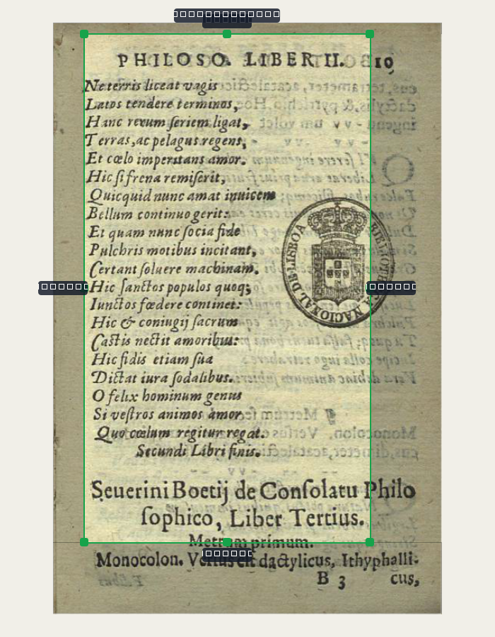
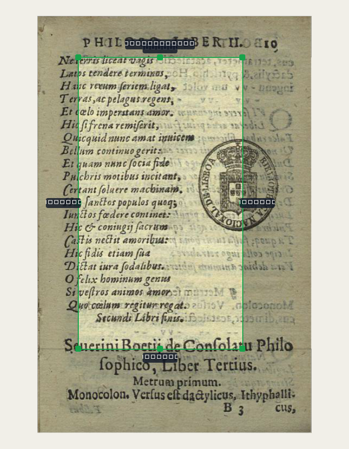
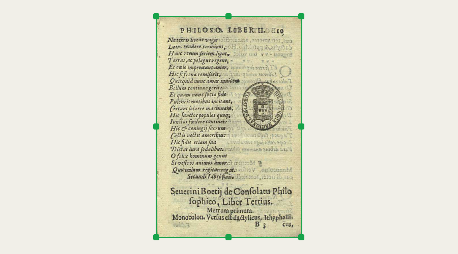
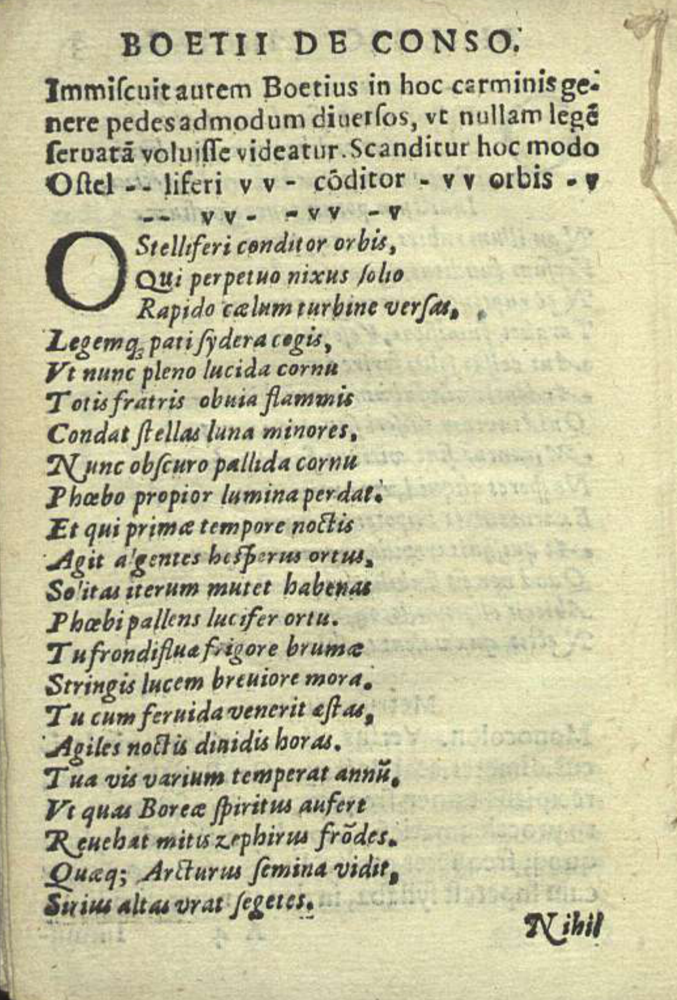
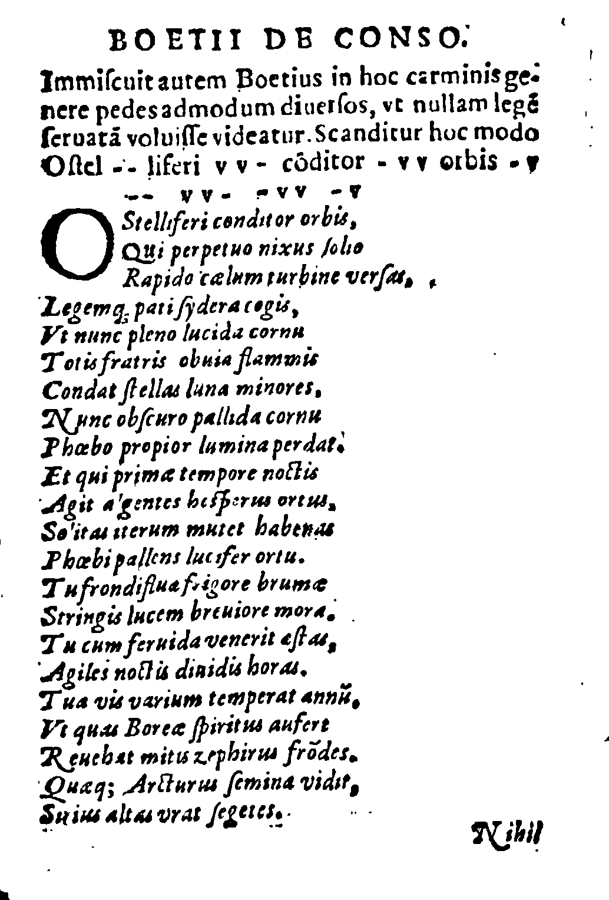
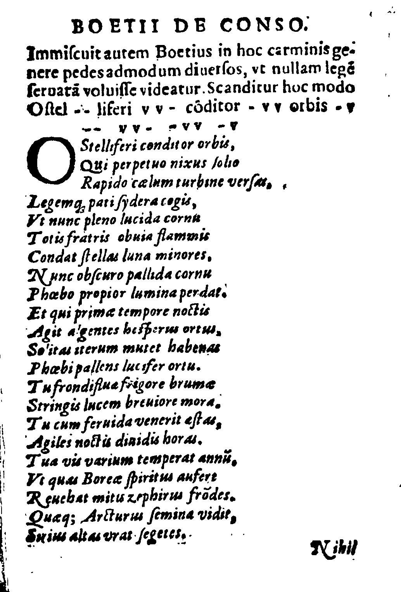

Tudo listado no plano aprovado foi implementado e testado (349 testes automáticos + 124 cliques reais nas telas, tudo passando). Nada foi commitado ainda — por protocolo, falta você abrir o programa pelo atalho e testar ao vivo antes do commit.
Aviso sobre as imagens abaixo: os textinhos em cm (e outras dicas de tela) aparecem como quadradinhos pretos nos prints — isso é só porque gerei os prints num modo do programa que roda "sem tela" (pra automação), e esse modo não tem nenhuma fonte de letra instalada. Confirmei isso com um teste à parte: qualquer texto, mesmo de telas antigas que eu não toquei, sai como quadradinho nesse modo. No programa de verdade, aberto normalmente, o texto aparece normal. Só quis deixar claro antes de você olhar, pra não achar que quebrei alguma coisa.
Antes do conserto, arrastar os cantos direitos do retângulo verde não mexia na largura. Comparando a imagem 1 (retângulo antes) com a 2 (depois de arrastar o canto de baixo-direita): a largura aumentou de verdade — o bug está corrigido.


Espelhado — arrastei só o lado direito, e os dois lados (esquerdo e direito) se moveram juntos, mantendo o meio no lugar:

Proporção travada — arrastei o canto de baixo-direita, e o retângulo cresceu nos 4 lados mantendo a mesma forma (a razão largura/altura de antes):

Os botões "Espelhado" e "Proporção travada" e as teclas T/M ficam na barra de botões da aba Bordas — ainda não testados com clique de mouse de verdade nem com tecla de verdade (só a lógica interna, que estes prints mostram). Vale você testar isso especificamente.
Aparecem (como quadradinhos no print, texto de verdade no programa) enquanto você arrasta o retângulo — um de cada lado cortado, e o tamanho final no topo:

O botão "tamanho..." (ao lado de "usar em todas") abre um diálogo com campos de largura/altura em cm e atalhos A4/A5/Carta. Testado no clique automático (o robô escolheu "A5" e confirmou, sem travar) — ainda não testado visualmente por você.
Antes a página colava nas bordas da tela. Agora sobra uma faixa cinza-bege visível ao redor, mesmo em "ajustar à tela" (aqui o widget está bem mais largo que a página, de propósito, pra faixa aparecer clara nos dois lados):

Original, pra comparar:

Sauvola (o de sempre), Otsu e Wolf, lado a lado:


Minha leitura, olhando as três: nesta página específica as três saíram bem parecidas e legíveis — a letra itálica não quebrou em nenhuma. O Otsu pegou um pouco mais de poeira na margem esquerda; o Wolf, um pouco na direita. Não vi a perda de qualidade dramática que você tinha reportado antes — pode ser que ela apareça mais forte noutra página do Boécio, ou que o scan de baixa resolução (já documentado como limite conhecido do acervo) seja o fator principal, não o algoritmo. Vale você comparar estas três com o que via antes e me dizer se alguma ficou visivelmente melhor.
Limpar poeirinha (despeckle) ligado vs desligado, mesma página, mesmo algoritmo (Sauvola) — dá pra ver mais pontinhos soltos na versão desligada:
O seletor de algoritmo e a caixa de despeckle ficam na aba Filtro, dentro do bloco "AJUSTE", só quando Preto e branco está escolhido.
Conferido direto no código (não é mais preciso adivinhar):
ConfigPagina.filtro por padrão agora: original (era preto_e_branco)
Projeto.filtro_padrao por padrão agora: original (era preto_e_branco)
A detecção de gravura/letra/papel não roda mais sozinha ao abrir a aba Marcar — agora tem um botão "detectar automaticamente" nessa aba (e o mesmo pelo menu Marcar → "Procurar de novo"). O "usar em todas" do Filtro já existia — confirmei que continua funcionando, e agora também leva junto o algoritmo do Preto e branco e o despeckle escolhidos.
Nova conta que compara o resultado do Preto e branco com o original e aponta
sozinha se sobrou tinta demais (escura_demais) ou se o texto quase sumiu
(apagada_demais) — aparece no mesmo painel "Para revisar" de sempre. Testei
nos três algoritmos da página 8: nenhum disparou o alerta (bate com a leitura
acima, de que as três saíram razoáveis nesta página).
conteudo_escala, conteudo_deslocamento) — mas a parte de arrastar o
conteúdo na tela ainda não foi ligada na interface. Escolhi priorizar
terminar os outros 7 itens do plano primeiro; posso voltar nisso na próxima
rodada.avaliar_selecao.py) rodada com calma antes de
mexer, em vez de entrar apressada no fim de uma sessão já grande.cd D:\programas\EditorImpressao
.venv\Scripts\python.exe -m pytest tests -q # 349 casos
.venv\Scripts\pythonw.exe main.py # abrir de verdade e testar
Nada commitado. Quando você testar e aprovar (ou pedir ajuste), sigo pro commit.
Editor de Impressão · gerado em 17/09/2026 às 16:28